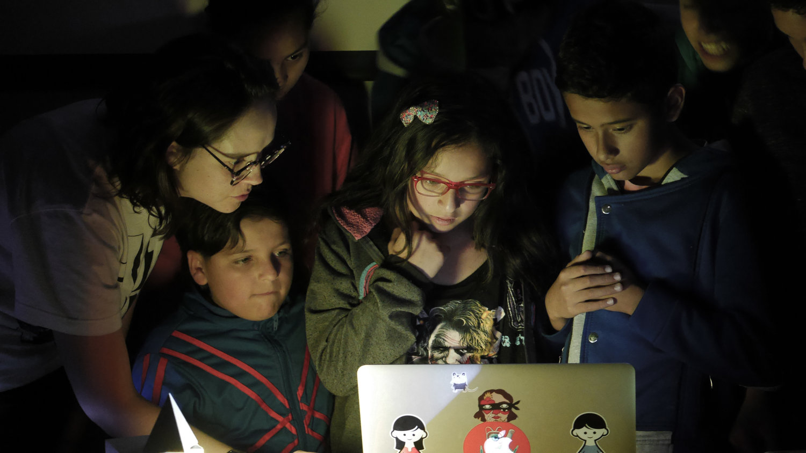
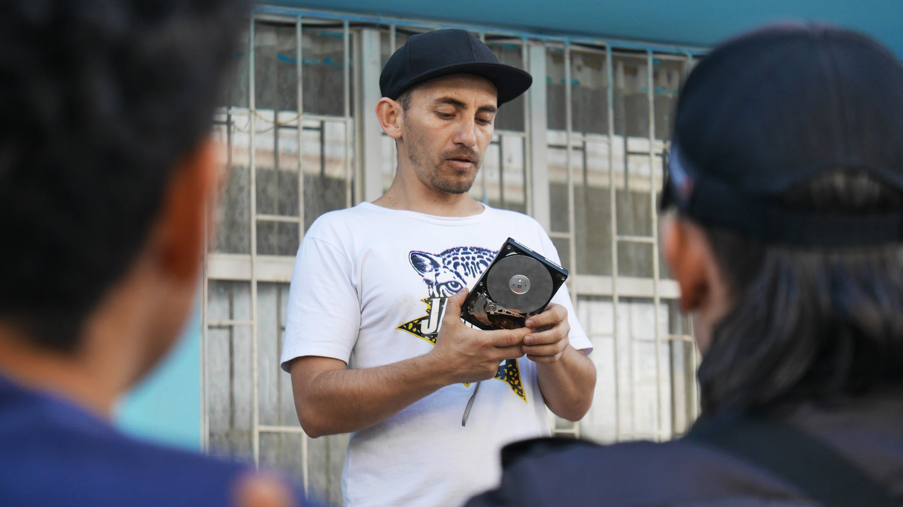

Electronic music in Ciudad Bolívar.
At the beginning of 2019 I started working with Julio Victoria, a famous Colombian DJ, on a project to bring electronic music workshops to Ciudad Bolívar, the most deprived barrio in Bogotá, Colombia. With the support of the Goethe Institut we developed six theoretical-practical workshops between May to September 2019: each one had the participation of expert artists in their disciplines alongside a group of thirty children.
I participated in the foundation of this collective and supported everything related to the audiovisual area. I also redesigned Julio Vitoria's website and have been working with him in other parallel projects.

